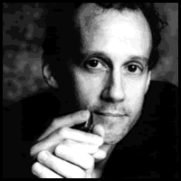
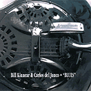
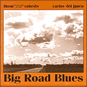
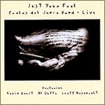
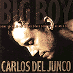

 |
CARLOS del JUNCO
КАРЛОС дел ХУНКО
???, Гавана, Куба
Канадский (по гражданству) харпист и вокалист. Один из наиболее виртуозных (а в блюзе - едва ли не единственный) исполнителей в технике "оверблоу". Обладает ярким индивидуальным стилем, в котором современный и традиционный блюз комплиментируются латиноамериканскими ритмами, а аранжировки и развернутые сольные импровизации исполняются по канве мейнстрим-джаза.
|
Родители иммигрировали в Канаду, когда ему исполнился год. Впервые с губной гармоникой на сцену вышел в возрасте 14лет; это был школьный вечер талантов, аккомпанировал ему учитель математики. Государственная канадская образовательная система весьма помогла ему в музыкальных занятиях... В арт-колледже Онтарио, где он изучал изобразительные искусства, он играл в "Ontario College of Art Swing Band". Дел хунко, дипломированный скульптор, говорит: "Музыка - это лишь еще один способ создания линии и фактуры". В 80-х играл во многих ансамблях разных стилевых направлений: джаз, ритм-энд-блюз, регги, латиноамериканскую музыку.
В 1990 году вместе с Кевином Куком собрал группу "The Delcomos". В 1991 году сочинил и исполнил музыку к театральному спектаклю "Dry Lips Oughta Move To Kapuskasing", удостоенному престижных театральных наград Канады. В 1993 году, на Чемпионате (sic!) губной гармоники в Троссингеме был удостоен двух золотых медалей за победу в в соревнованиях исполнительского мастерства на диатонической губной гармонике в стиле джаз и встиле блюз. (Теперь это называется "Конкурс", его проводит фирма "Хоннер", лидер в области производства губных гармоник)
|  |
В ноябре 1993 года на независимом блюзовом лейбле вышел дебютный альбом, записанный в дуэте с ныне покойным гитаристом-вокалистом Биллом Киннаэром (Bill Kinnear). В альбоме звучала древняя блюзовая классика, и скрипучий хриплый голос Б.Киннаэра под собственный энергичный, но лаконичный аккомпанемент на добро придавал этому исполнению не покупаемое обаяние подлинности. Губная гармоника дел Хунко, звучащая чуть призрачно, выдерживала идеально интересный баланс между традицией Дельта-блюза и современными новациями. В Канаде этот альбом с кратким названием "Блюз" имел огромный успех среди ценителей традиционного блюза. В 1995 дел Хунко попробует повторить эту формулу дуэта гитара-гармоника с другим представителем кантри-блюза: Томом Робертсом, по прозвищу "Чарли Шампанское" (Thom "Champagne Charlie" Roberts). Их альбом "Блюз большой дороги" тоже составлен из блюзовой классики 20-30-х годов и по своему весьма любопытен. Однако при прямом сравнении он сильно проигрывает предыдущему в органичности. |
|  |
Весной 1995 года получает государственный грант на изучение техники Ховарда Ливай (Howard Levy) в Чикаго. Эта техника, называемая "оверблоу" ("overblow") позволяет значительно расширять гармонические возможности обычной диатонической гармоники. Приверженцы утверждают, что с помощью этой техники можно играть на диатонической гармонике, как на хроматической, но с выразительностью и чувственностью, какую не передает хроматика с ее "механическим тоном". |
|  |
В 1996 году активно гастролирует со своей новой группой, в которую входят: Кевин Брейт (Kevin Breit), гитара; Эл Даффи Al Duffy (бас); Джеф Арсено (Geoff Arsenault), ударные. Во время турне в небольшом клубе записан концертный альбом "Just Your Fool". Турне и два альбома (с группой и в дуэте с Томом Робертсом) приносят ему награду "Блюзовый музыкант 1996 года" от Jazz Report. Карлос дел Хунко становится непременным участником крупнейших канадских блюз-фестивалей и четырежды (!) получает правительственный грант на проведение гастролей. В 1997 и 1998 года он получает премию блюзового общества Торонто под названием "Кленовый лист" (Maple Leaf Blues Award) как лучший исполнитель года на губной гармонике |
|  |
Альбом 1998 года носит длинное и претенциозное название "Большой мальчик, сколько-то блюзов из утильсырья и еще что-то в этом роде". Альбом начинается великолепным, по-чикагски жестким шафлом, но затем сбивается то на регги, то на ска, то в джаз, то в пять четвертей, а потом вдруг цитирует Бетховена. Преуспевая в стилистическом разнообразии и демонстрации блестящей техники (это относится и к талантам гитариста К.Брейта), альбом проигрывает по общей атмосфере. Как использовать техническую изощренность, не нарушая блюзовой внешней простоватости и внутренней душевности - остается общей проблемой для современных виртуозов. Карлос дел Хунко - не исключение. |

Дискография:
- 1993 - with Bill Kinnear "Blues" (Big Reed Records)
- 1995 - with Thom "Champagne Charlie" Roberts "Big Road Blues" (Big Reed Records)
- 1995 - with Carlos del Junco Band "Just Your Fool" (Big Reed Records)
- 1998 - "BIG BOY, Some Recycled Blues And Other Somewhat Related Stuff" (Big Reed Records)
Образцы 1995 года:
 WALKING BLUES Роберта Джонсона WALKING BLUES Роберта Джонсона
сразу | про запас
QUIET WHISKEY (качество намеренно занижено)
В сети:
именной сайт - http://www.carlosdeljunco.com/
|